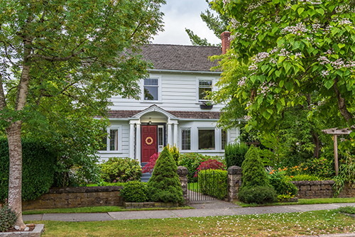

Between the wooded properties, quiet neighborhoods, mature shade trees, and coastal New Jersey weather patterns, homeowners in Smithville often enjoy a landscape that feels established and natural. That beauty, however, also comes with responsibility. Trees need more than occasional attention after a storm or a quick trim when branches get too close to the house. They need thoughtful care from people who understand how local soil, weather, growth patterns, and property conditions work together. That is why choosing the right tree service in Smithville is such an important part of protecting your home, your yard, and the long term health of your trees.
The Value of Professional Tree Service in Smithville
For homeowners in and around the town of Smithville, Ben Bivins Tree Experts provides professional tree care with the kind of local experience that matters. Trees in this area face a mix of heavy winds, saturated soil, humid summers, winter stress, and dense neighborhood growth. A tree may look fine from the ground while hidden problems develop above the roofline or deep within the root system. Having a knowledgeable tree company inspect, maintain, and service your property can help prevent small concerns from turning into major damage.
Many homeowners think of tree service only when a tree needs to come down. While tree removal is an important part of professional tree work, a complete tree service company does much more. Regular tree care can improve safety, encourage healthier growth, preserve curb appeal, and help homeowners make better decisions about their property.
Smithville has many homes surrounded by mature trees. These trees add shade, privacy, and charm, but they can also create risk when they grow too close to roofs, driveways, fences, sheds, or utility areas. Overextended limbs may break during high winds. Heavy branches can put pressure on a tree’s structure. Deadwood can fall without warning. Dense canopies may block sunlight and airflow, which can affect the surrounding lawn and plantings.
A tree service professional in Smithville can evaluate these conditions and recommend the right solution. Sometimes that means selective pruning, sometimes it means removing unsafe branches. In more serious cases, it may mean removing a tree that has become unstable, damaged, or poorly positioned.
Tree Trimming Should Support Safety and Appearance
Tree trimming should never be treated as simple cutting. Poor pruning weakens a tree, creates long term structural issues, and leaves the landscape looking uneven. Proper trimming requires an understanding of how trees respond to cuts, where branches should be removed, and how much growth can be safely reduced at one time.
For Smithville homeowners, trimming can serve several purposes. It can clear branches away from the home, improve visibility around the property, reduce weight in crowded limbs, and shape trees so they continue to grow in a balanced way. It can also help reduce the chances of branches scraping siding, damaging shingles, or hanging over outdoor living areas.
Ben Bivins Tree Experts brings a careful approach to trimming and pruning. The goal is not just to cut back what looks overgrown. The goal is to improve the tree’s condition while also making the property safer and cleaner. That type of approach helps homeowners maintain the natural look of their yard without ignoring practical concerns.
When Tree Removal Becomes the Right Choice
No homeowner likes the idea of removing a tree that has been part of the property for years. Still, there are times when removal becomes the safest and most responsible option. A tree may be too close to a structure, leaning in a concerning direction, damaged beyond recovery, or located in a place where future growth will create ongoing problems.
Tree removal requires experience, planning, and the right equipment. Cutting down a tree near a home, fence, driveway, or neighboring property is not a weekend project. Even a medium sized tree can cause serious damage if it falls incorrectly. Professional crews understand how to control the removal process and protect the surrounding area.
For homeowners searching for tree service in Smithville, it is especially important to choose a company that treats tree removal with care. Ben Bivins Tree Experts can assess the tree and complete the work safely and efficiently giving homeowners confidence that the job is handled correctly from start to finish.
Storm Preparation and Cleanup
New Jersey weather can be unpredictable, especially near the shore and wooded areas. Strong winds, heavy rain, and sudden storms can expose weaknesses in trees that looked stable the day before. Homeowners in Smithville know that one storm can leave broken limbs, hanging branches, blocked driveways, or damaged sections of the yard. Tree care before storm season can reduce some of those risks. Removing deadwood, thinning heavy branches, and identifying trees with structural concerns can make a property better prepared. After a storm, professional cleanup is just as important. Hanging limbs and partially broken branches can be dangerous, even if they seem secure. Whether the property needs preventive care or post storm cleanup, having an experienced local company makes the process easier and safer.
Protecting Your Property
A well-maintained landscape adds value to a home. Trees contribute to that value when they are healthy, properly placed, and well cared for. On the other hand, neglected trees can make a property look unkempt and may create costly issues over time. Professional tree service helps homeowners take control of these issues. Instead of waiting until a problem becomes urgent, routine care allows you to manage your property with a long term view. That is especially useful in Smithville, where mature trees are often one of the most noticeable features of a yard. Choosing a trusted tree company is not only about fixing problems. It is about protecting the investment you have already made in your home and landscape.

Why Choose Ben Bivins Tree Experts for Tree Service in Smithville
Ben Bivins Tree Experts understands the needs of homeowners in Smithville and surrounding South Jersey communities. Their work is built around safe practices, knowledgeable service, and respect for the property. Whether a homeowner needs trimming, removal, cleanup, or a professional opinion, working with an experienced team makes a difference.
The right company for tree service in Smithville should not pressure homeowners into unnecessary work. It should help them understand what is happening on their property and what options make the most sense. That clear, honest approach is especially important when dealing with trees near homes, driveways, fences, and outdoor living spaces.
For homeowners looking for dependable tree service in Smithville, Ben Bivins Tree Experts offers the kind of local experience and professional care that can keep a property safer, cleaner, and healthier.